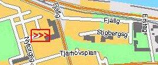
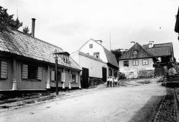
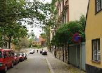
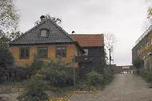
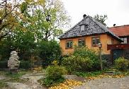
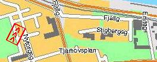
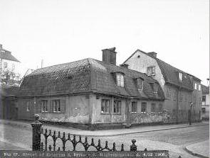

Södermalm i tid och rum

Stigbergsgatan väster om Renstjernas gata. (Sandbacksgatan) Bilder från väster.

Stigbergsgatan 3-7. (Sandbacksgatan, Kv Mäster Mikael). Stigbergsgatan österut Stigbergsgatan 6, 7 (Kv Mäster Mikael, Sandbacken Mindre). Stigbergsgatan mot öster från Nytorgsgatan. Till vänster Kv Mäster Mikael, till höger Sandbacken Mindre. Till vänster nr 5, rakt fram nr 7. Till höger nr 6. (Fritz Ahlgrensson, akvarell, 1901)

2001

2001

2001


Hörnet Katarina Östra Kyrkogata (nuv) och Stigbergsgatan 1 år 1906